My role
- User interface design
- Implementation QA
- Style guide
- Wiki
- Design tokens
- Pattern library
Tool
- Figma
- Docusaurus
- Tailwind CSS
- Javascript
Info+
For the IBM Skills Network Team.
The problem.
As an agile software team, quick turnaround and development was key. I identified that one of the major factors slowing us down was the lack of guidelines and reusable design components so the wheel was being reinvented every time. Furthermore, our various products did not follow one design style despite supposedly being part of the same brand, a problem which magnified over the years due to the discrepancy between the team members’ interpretation the non-existent brand style.
Thus,
A system had to be created that could bring cohesion to the team’s existing and future products’ visual language, restricting interpretation but still allowing creative freedom. Methodologically, this system needed to enable designers to quickly iterated designs and then hand off to developers for development, with both designers and developers using a system they could reference as a source of truth. Additionally, as the team expands, it is important that the design system remains scalable but cohesive—guardrails must be put in place so that there was still creative freedom despite the restrictions.
So what if we had a centralized place for both designers and developers to reference when communicating design needs so to speed up the development process and eliminates redundancy and inconsistency?
Understanding the existing system and processes were key to the successful development integration of YADS, which brings us to the key objectives
/1
Create a design system that brought visual consistency to Skills Network products, and
/2
Optimize but not disrupt the existing production process.
Methodology (in progress)
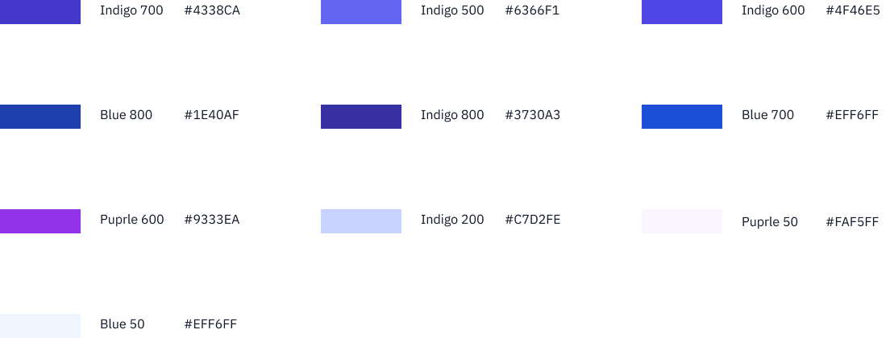
All of the purple/blue/violet shades I found on just one web page of one of our products.
This design system creation started by consolidating existing designs and consulting users to understand what best represented the current brand and what could best serve the brand in the future. First, I acquired all existing design files, which gave me an overview of the most used interfaces.
Foundations (in progress)
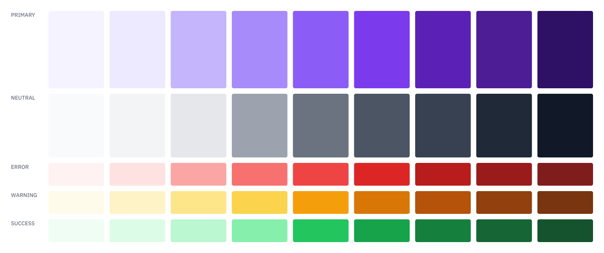
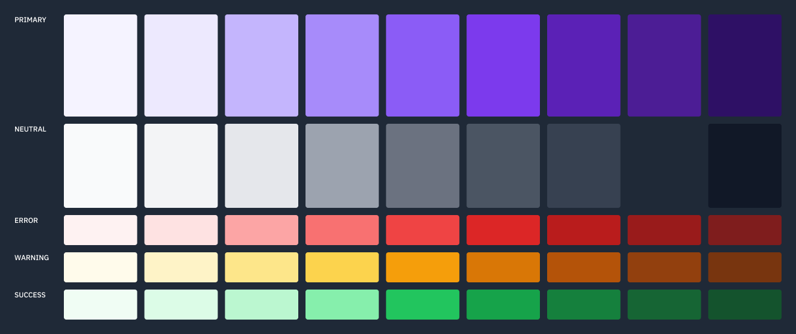
Colors
Defining the primary, neutral, and semantic colors.

Typography

Grid
Components (in progress)
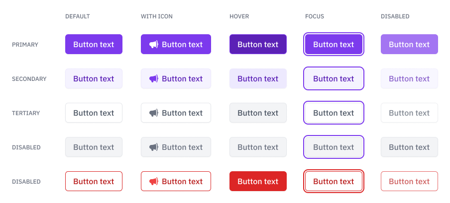
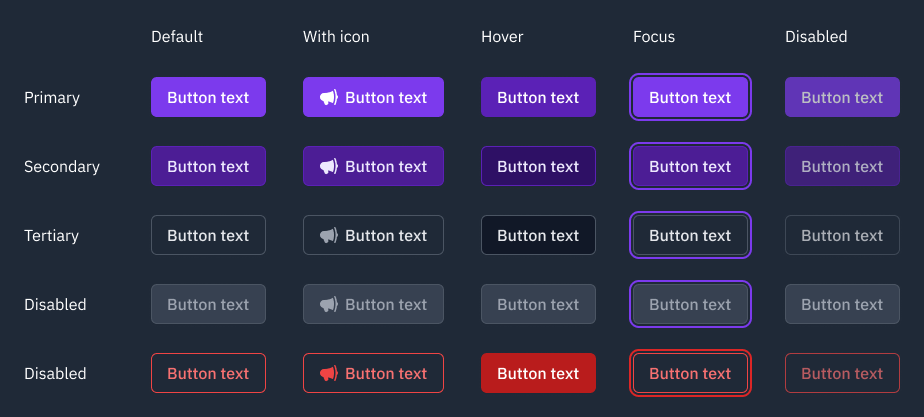
Buttons
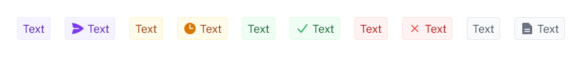

Badges
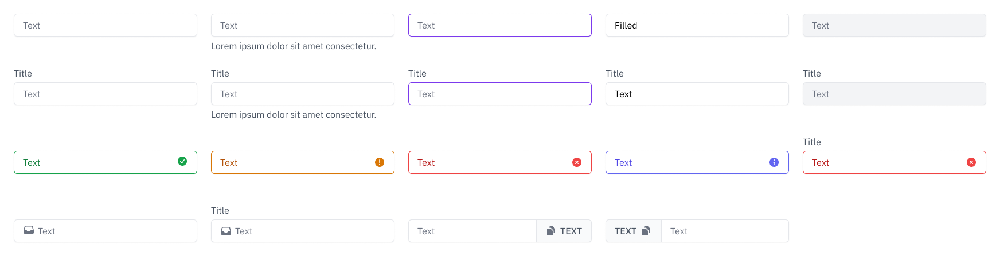
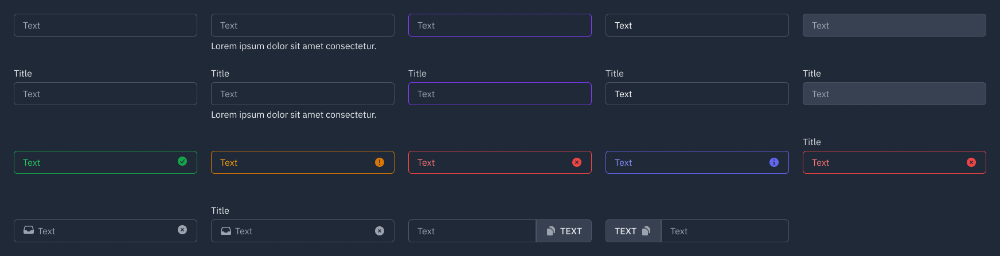
Input field
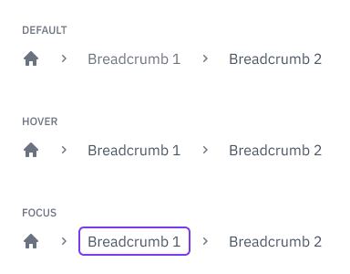
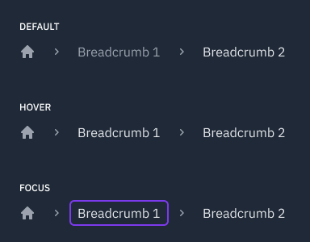
Breadcrumb
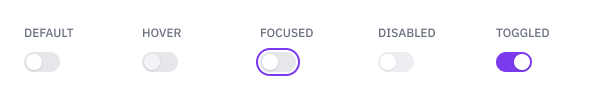
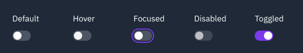
Toggle field
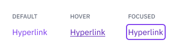
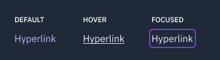